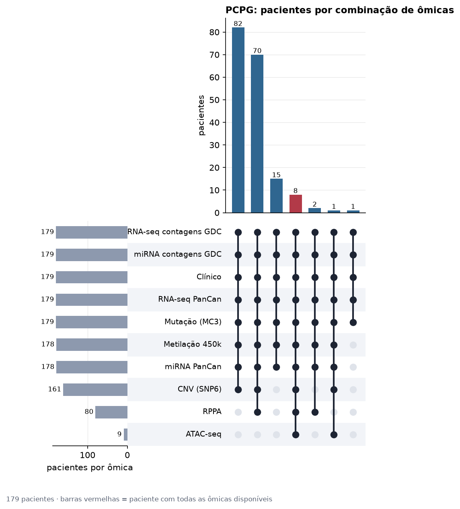
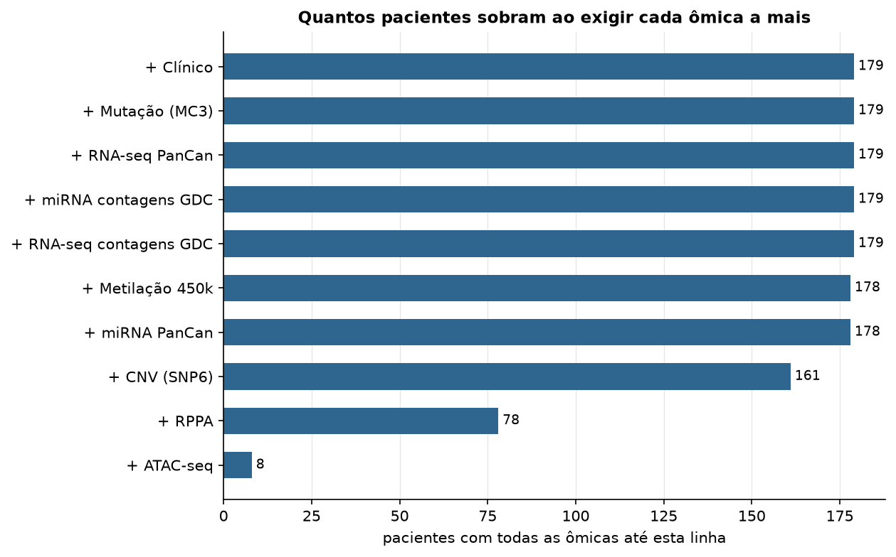
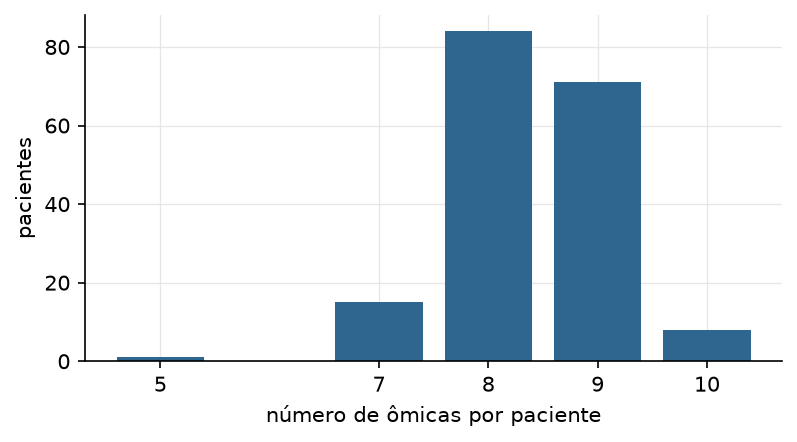

PCPG · panorama multiômico
TCGA PanCanAtlas 2018, contagens brutas do GDC, ATAC-seq e CPTAC · gerado em 22/10/2026 02:55
179pacientes (TCGA-CDR)
9ômicas com dados
8pacientes com todas
7combinações distintas
Proteoma CPTAC: O CPTAC só mediu proteoma por espectrometria de massa em amostras TCGA de BRCA, COAD/READ e OV. As coortes prospectivas do CPTAC são outros pacientes.
Relatórios
| Relatório | pacientes | conteúdo | situação |
|---|---|---|---|
| Clínico | 179 | Completude, estádio, metadados e sobrevida | ok |
| Mutação (MC3) | 179 | Carga mutacional, genes mais mutados, espectro e oncoplot | ok |
| CNV (SNP6) | 161 | Ganhos e perdas no genoma, fração alterada e genes recorrentes | ok |
| RNA-seq PanCan | 179 | Distribuição, PCA/UMAP, agrupamento, tumor x normal e clínica | ok |
| RNA-seq contagens GDC | 179 | Bibliotecas, superdispersão (binomial negativa), zeros e exploração em log-CPM | ok |
| miRNA PanCan | 178 | Distribuição, PCA/UMAP, agrupamento, tumor x normal e clínica | ok |
| miRNA contagens GDC | 179 | Bibliotecas, superdispersão, zeros e exploração em log-CPM | ok |
| Metilação 450k | 178 | Distribuição de beta, metilação global e exploração dos CpGs variáveis | ok |
| RPPA | 80 | Proteínas e fosfoproteínas: PCA, agrupamento e clínica | ok |
| ATAC-seq | 9 | Picos de cromatina acessível: PCA, agrupamento e clínica | ok |
| Proteoma CPTAC | 0 | Proteoma por espectrometria de massa: faltantes, PCA e clínica | não existe para este câncer |
| Comparações entre ômicas | Concordância entre fontes, efeitos em cis, mRNA x proteína, RV, agrupamento integrado | ok |
→ Comparação pan-câncer · todos os cânceres
Combinações de ômicas por paciente

Quantidade de dados por ômica
| ômica | pacientes (tumor) | % da coorte | amostras tumorais | amostras normais | pacientes com par tumor-normal | fonte |
|---|---|---|---|---|---|---|
| Clínico | 179 | 100 | 179 | 0 | 0 | TCGA-CDR (PanCanAtlas) |
| Mutação (MC3) | 179 | 100 | 179 | 0 | 0 | MC3 v0.2.8 (PanCanAtlas) |
| CNV (SNP6) | 161 | 89.9 | 165 | 0 | 0 | SNP6 whitelisted (PanCanAtlas) |
| RNA-seq PanCan | 179 | 100 | 184 | 3 | 3 | PanCanAtlas EB++ via API do Xena |
| RNA-seq contagens GDC | 179 | 100 | 184 | 3 | 3 | API do GDC (STAR - Counts) |
| miRNA PanCan | 178 | 99.4 | 183 | 3 | 3 | PanCanAtlas (pancanMiRs_EBadjOnProtocolPlatformWithoutRepsWithUnCorrectMiRs_08_04_16.xena) |
| miRNA contagens GDC | 179 | 100 | 184 | 3 | 3 | API do GDC (BCGSC miRNA Profiling) |
| Metilação 450k | 178 | 99.4 | 183 | 3 | 3 | PanCanAtlas HM450 via API do Xena |
| RPPA | 80 | 44.7 | 82 | 0 | 0 | PanCanAtlas (TCGA-RPPA-pancan-clean.xena) |
| ATAC-seq | 9 | 5 | 9 | 0 | 0 | ATAC-seq TCGA (Corces 2018) via API do Xena |
| Proteoma CPTAC | 0 | 0 | 0 | 0 | 0 | não existe para este câncer |


Combinações (todas as ômicas)
| combinação | pacientes | nº de ômicas |
|---|---|---|
| Clínico+Mutação (MC3)+CNV (SNP6)+RNA-seq PanCan+RNA-seq contagens GDC+miRNA PanCan+miRNA contagens GDC+Metilação 450k | 82 | 8 |
| Clínico+Mutação (MC3)+CNV (SNP6)+RNA-seq PanCan+RNA-seq contagens GDC+miRNA PanCan+miRNA contagens GDC+Metilação 450k+RPPA | 70 | 9 |
| Clínico+Mutação (MC3)+RNA-seq PanCan+RNA-seq contagens GDC+miRNA PanCan+miRNA contagens GDC+Metilação 450k | 15 | 7 |
| Clínico+Mutação (MC3)+CNV (SNP6)+RNA-seq PanCan+RNA-seq contagens GDC+miRNA PanCan+miRNA contagens GDC+Metilação 450k+RPPA+ATAC-seq | 8 | 10 |
| Clínico+Mutação (MC3)+RNA-seq PanCan+RNA-seq contagens GDC+miRNA PanCan+miRNA contagens GDC+Metilação 450k+RPPA | 2 | 8 |
| Clínico+Mutação (MC3)+CNV (SNP6)+RNA-seq PanCan+RNA-seq contagens GDC+miRNA PanCan+miRNA contagens GDC+Metilação 450k+ATAC-seq | 1 | 9 |
| Clínico+Mutação (MC3)+RNA-seq PanCan+RNA-seq contagens GDC+miRNA contagens GDC | 1 | 5 |
Pacientes de exemplo guardados
Os dados brutos foram apagados depois das análises. Para cada combinação abaixo ficou guardado um paciente completo (todas as features de cada ômica) em exemplos/PCPG.
| paciente | pasta em exemplos/PCPG | pacientes com esta combinação | ômicas |
|---|---|---|---|
| TCGA-QT-A5XJ | 01_mut-cnv-rna-rnaCont-mir-mirCont-met-rppa-atac | 8 | Mutação (MC3) + CNV (SNP6) + RNA-seq PanCan + RNA-seq contagens GDC + miRNA PanCan + miRNA contagens GDC + Metilação 450k + RPPA + ATAC-seq |
| TCGA-P8-A5KC | 02_mut-cnv-rna-rnaCont-mir-mirCont-met-rppa | 70 | Mutação (MC3) + CNV (SNP6) + RNA-seq PanCan + RNA-seq contagens GDC + miRNA PanCan + miRNA contagens GDC + Metilação 450k + RPPA |
| TCGA-TT-A6YP | 03_mut-cnv-rna-rnaCont-mir-mirCont-met-atac | 1 | Mutação (MC3) + CNV (SNP6) + RNA-seq PanCan + RNA-seq contagens GDC + miRNA PanCan + miRNA contagens GDC + Metilação 450k + ATAC-seq |
| TCGA-P7-A5NY | 04_mut-cnv-rna-rnaCont-mir-mirCont-met | 82 | Mutação (MC3) + CNV (SNP6) + RNA-seq PanCan + RNA-seq contagens GDC + miRNA PanCan + miRNA contagens GDC + Metilação 450k |
| TCGA-P7-A5NX | 05_mut-rna-rnaCont-mir-mirCont-met-rppa | 2 | Mutação (MC3) + RNA-seq PanCan + RNA-seq contagens GDC + miRNA PanCan + miRNA contagens GDC + Metilação 450k + RPPA |
| TCGA-QR-A6GW | 06_mut-rna-rnaCont-mir-mirCont-met | 15 | Mutação (MC3) + RNA-seq PanCan + RNA-seq contagens GDC + miRNA PanCan + miRNA contagens GDC + Metilação 450k |
| TCGA-WB-A820 | 07_mut-rna-rnaCont-mirCont | 1 | Mutação (MC3) + RNA-seq PanCan + RNA-seq contagens GDC + miRNA contagens GDC |